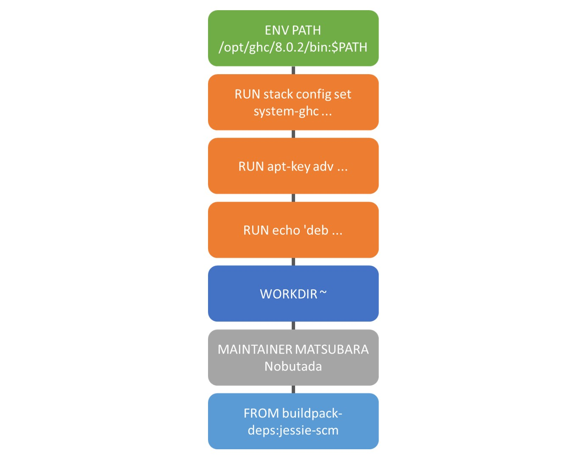
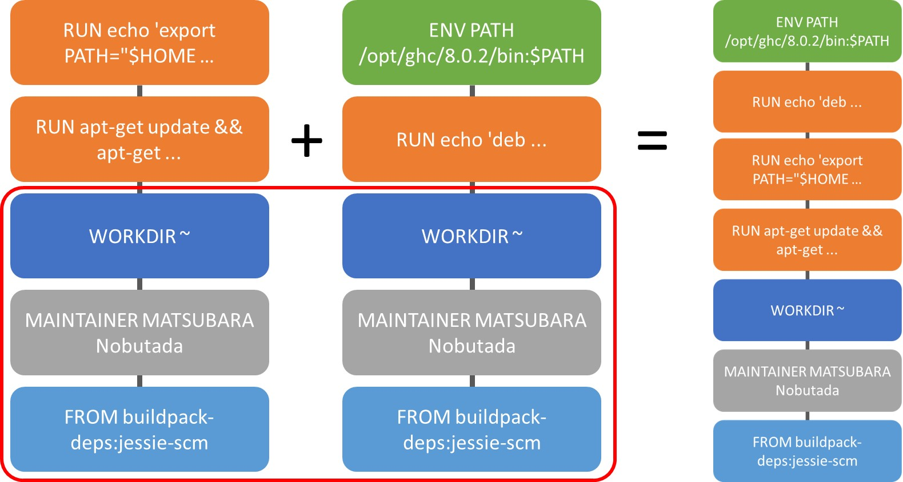

Dockerfileを並列に結ぶコマンドを作りたい(作った？)
Docker コンテナは階層構造になっている． 例えば，次のような Dockaerfile の場合は
FROM buildpack-deps:jessie-scm
MAINTAINER MATSUBARA Nobutada
WORKDIR ~
# Install Haskell
## with stack
RUN echo 'deb http://ppa.launchpad.net/hvr/ghc/ubuntu trusty main' > /etc/apt/sources.list.d/ghc.list \
&& apt-key adv --keyserver keyserver.ubuntu.com --recv-keys F6F88286 \
&& apt-get update && apt-get install -y --no-install-recommends \
ca-certificates \
g++ \
ghc-8.0.2 \
libtinfo-dev \
&& apt-get clean \
&& rm -rf /var/lib/apt/lists/*
RUN apt-key adv --keyserver hkp://keyserver.ubuntu.com:80 --recv-keys 575159689BEFB442 \
&& echo 'deb http://download.fpcomplete.com/debian jessie main' | tee /etc/apt/sources.list.d/fpco.list \
&& apt-get update && apt-get install -y --no-install-recommends \
stack \
&& apt-get clean \
&& rm -rf /var/lib/apt/lists/*
RUN stack config set system-ghc --global true
ENV PATH /opt/ghc/8.0.2/bin:$PATH次のような階層構造になる．

要するに，直列にどんどん乗っけていくことは可能なのだ．
対して，ベースが同じ Dockerfile がふたつあったとき，それをいい感じに並列に繋げることはできない．

上図の赤枠のレイヤーは同一である． 上ふたつずつが異なる． なので，ふたつの Dockerfile を前半の共通部分をまず実行し，つぎに異なる部分を実行するような階層構造にしてほしい．
こうすることで，独立した Dockerfile，例えば Ruby をインストールする Dockerfile と Haskell をインストールする Dockerfile を別々に作成・テストし，それを組み合わせて(マージして)，Ruby と Haskell をインストールする Dockerfile を作りたい．
と前回の記事の最後で言った(つもり)．
ので，そういうことをしてくれるコマンドを作ってみた．
どうつくるか
もちろん Haskell (ぶれない)．
そもそも，パーサーが必要なので Haskell が向いてるに決まってる(暴論)．
というかあるんじゃないか？と思った(パーサーが)．
流石，Haskeller 達は抜かりない．
これは，Dockerfile のパーサーに加えて，Dockerfile のデータ構造を Dockerfile の形式で綺麗に出力する pretty-printer ，Haskell での Dockerfile の内部DSLなど，DOckerfile に関するより取り見取りなライブラリである． hdolint という Haskell製の Dockerfile の静的検査プログラムをベースにしてるらしい． なので，linter も含まれている． すごい
わざわざ車輪の再発名をする必要は無いので，巨人の肩にのさせてもらおう．
つくった
GitHub はこちら．
数時間で適当に作った．
Dockerfile の命令で綺麗にデータ構造になっているので，ふたつの Dockerfile の命令の等価性を頭からチェックし，違ったら直列に繋げてる． だけ，なので，正直バグ含む可能性は十分にある．
まぁそういうのはおいおい直します．
コマンドの引数の処理は例の如く optparse-applicative を使った． まぁ，まだオプションは無いんですけど(Dockerfile のパスを好きなだけ渡すだけ)．
コード
こんだけしかない．
toInstructions :: Dockerfile -> [Instruction]
toInstructions = fmap instruction
removeEOL :: [Instruction] -> [Instruction]
removeEOL = filter (/= EOL)
mergeDockerfiles :: [Instruction] -> [Instruction] -> [Instruction]
mergeDockerfiles [] df = df
mergeDockerfiles xs@(x:xs') ys@(y:ys')
| x == y = x : mergeDockerfiles xs' ys'
| otherwise = xs `mappend` ys
merge :: [Dockerfile] -> Dockerfile
merge = toDockerfile . foldl mergeDockerfiles [] . fromDockerfile
where
toDockerfile = fmap instructionPos
fromDockerfile = fmap (removeEOL . toInstructions)これをメイン関数で呼んでるだけ．
language-dockerfile の Dockerfile 型は [InstructionPos] の型シノニム． InstructionPos は Dockerfile の命令コマンドに行番号やファイル名が含まれている． 等価性をチェックするのに，これらの余分な情報は要らないから消している(toInstructions)．
EOL (改行) も要らないから消している(removeEOL)
あとは再帰的に等しいかをチェックしている(mergeDockerfiles)． Eq はもとから定義してあったのでそれに準拠した．
これを複数の Dockerfile に対し，畳み込んで適用している(merge)．
簡単ですね．
実行
次の Ruby をインストールする Dockerfile と，さっきの Haskell をインストールする Dockerfileをマージする．
FROM buildpack-deps:jessie-scm
MAINTAINER MATSUBARA Nobutada
WORKDIR ~
# install Ruby
## use rbenv
RUN apt-get update && apt-get install -y --no-install-recommends \
g++ \
gcc \
make \
&& apt-get clean \
&& rm -rf /var/lib/apt/lists/*
RUN git clone https://github.com/rbenv/rbenv.git ~/.rbenv
RUN cd ~/.rbenv \
&& src/configure \
&& make -C src
RUN git clone https://github.com/sstephenson/ruby-build.git ~/.rbenv/plugins/ruby-build
RUN echo 'export PATH="$HOME/.rbenv/bin:$PATH"' >> ~/.bashrc$ stack exec -- docker-merge .\Dockerfiles\ruby\Dockerfile .\Dockerfiles\haskell\Dockerfile
FROM buildpack-deps:jessie-scm
MAINTAINER MATSUBARA Nobutada
WORKDIR ~
# install Ruby
# # use rbenv
RUN apt-get update \
&& apt-get install -y --no-install-recommends g++ gcc make \
&& apt-get clean \
&& rm -rf /var/lib/apt/lists/*
RUN git clone https://github.com/rbenv/rbenv.git ~/.rbenv
RUN cd ~/.rbenv \
&& src/configure \
&& make -C src
RUN git clone https://github.com/sstephenson/ruby-build.git ~/.rbenv/plugins/ruby-build
RUN echo 'export PATH="$HOME/.rbenv/bin:$PATH"' >> ~/.bashrc
# Install Haskell
# # with stack
RUN echo 'deb http://ppa.launchpad.net/hvr/ghc/ubuntu trusty main' > /etc/apt/sources.list.d/ghc.list \
&& apt-key adv --keyserver keyserver.ubuntu.com --recv-keys F6F88286 \
&& apt-get update \
&& apt-get install -y --no-install-recommends ca-certificates g++ ghc-8.0.2 libtinfo-dev \
&& apt-get clean \
&& rm -rf /var/lib/apt/lists/*
RUN apt-key adv --keyserver hkp://keyserver.ubuntu.com:80 --recv-keys 575159689BEFB442 \
&& echo 'deb http://download.fpcomplete.com/debian jessie main' | tee /etc/apt/sources.list.d/fpco.list \
&& apt-get update \
&& apt-get install -y --no-install-recommends stack \
&& apt-get clean \
&& rm -rf /var/lib/apt/lists/*
RUN stack config set system-ghc --global true
ENV PATH="/opt/ghc/8.0.2/bin:$PATH"うん，取りあえずはいい感じ．
おしまい
今回はとりあえず合体させるコマンドを作っただけ． なので，合体させてもいいかどうかもチェックできるように改良したい．
あと，language-dockerfile と Haskell の Testing ライブラリを組み合わせれば，簡単にテストもできそう． 既にある hdolint も使えるしね．